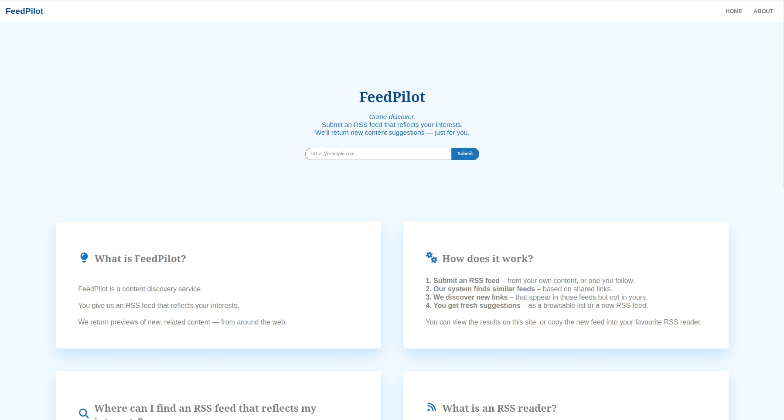
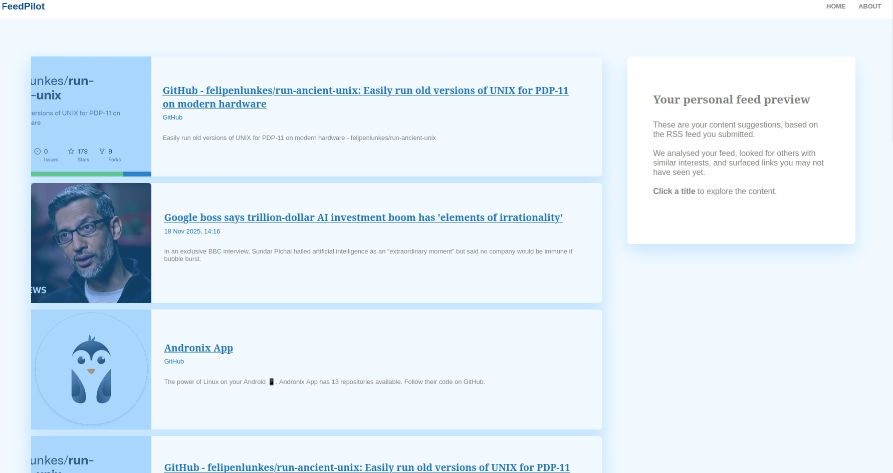

A browser-based content discovery tool. Submit an RSS feed that reflects your interests, and FeedPilot analyzes it, finds feeds with similar interests, and surfaces new content suggestions you likely haven't seen — without a commercial platform's algorithm deciding for you.


I was responsible for two parts of this project:
Developed by the DAME project (South Savo Data Economy Accelerator), South-Eastern Finland University of Applied Sciences — Digitalia, in partnership with Cluetail Ltd, Contrasec Oy, and Metatavu Oy. Co-funded by the European Union via the European Regional Development Fund.
This was a multi-contributor pilot project — see "My contributions" above for my part.